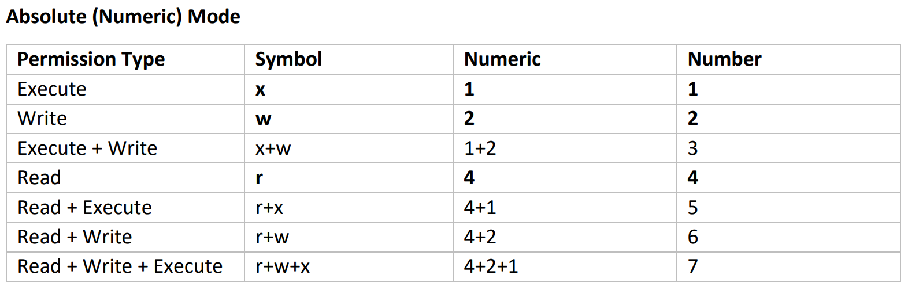

change mode - change file mode bits - changes file premmisons
chmod accepts an octal value consisting of 4 numbers ranging from 0 to 7 (0 to 111 in binary).
example: 444, 1777, 7777

chmod 777 new.txt - will change all premmisons of the file to rwx for all groups (not recomended)
chmod +x new.txt - will add executeable to all groups
chmod u+s new.txt - will addsetuid to owner
chmod +t aStickyFolder/ - adds a sticky bit to the folder
